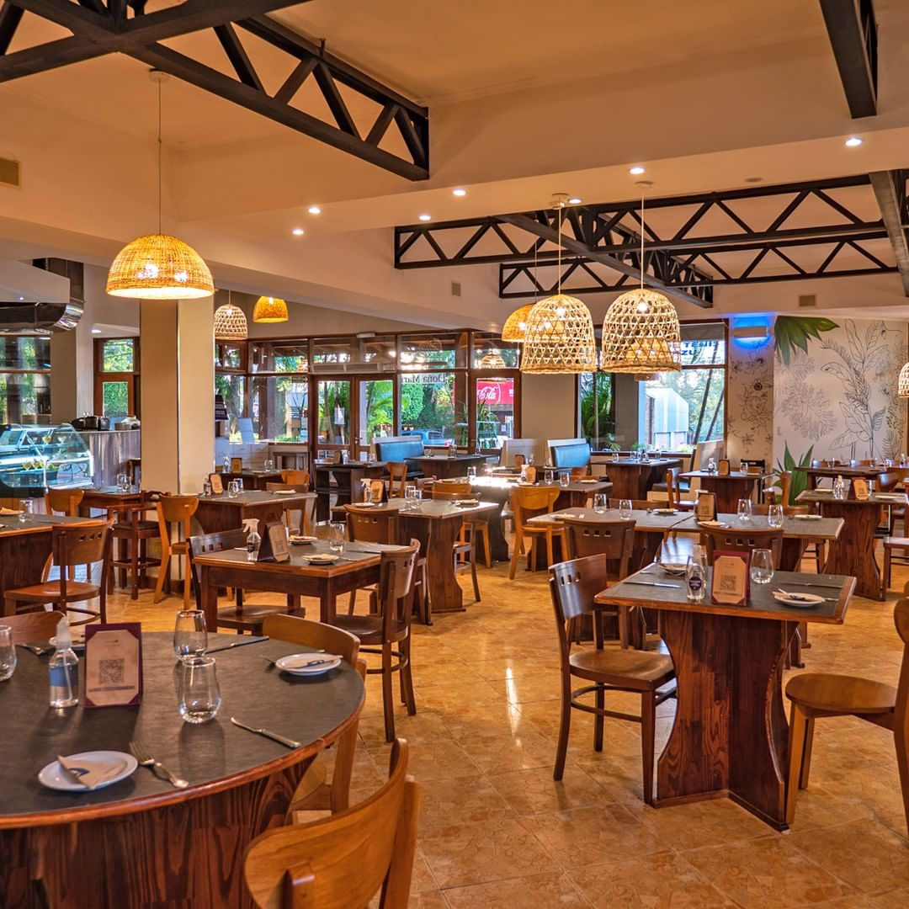

Lugares Populares en Caazapá

Comedor Doña María - Comida típica a buen precio.

Gasolinera Caazapá - Siempre lista para los viajeros.

Mercado Central - Productos frescos y artesanías locales.

Panadería San Juan - Deliciosos panes y dulces caseros.

Restaurante El Criollo - Asados tradicionales y más.

Farmacia Caazapá - Abierta las 24 horas.

Tienda Casa Verde - Productos y artesanías locales.

Hotel Las Palmas - Hospedaje cómodo y accesible.

Café Caazapeño - El mejor café de la región.

Centro Comercial Caazapá - Compras y entretenimiento.